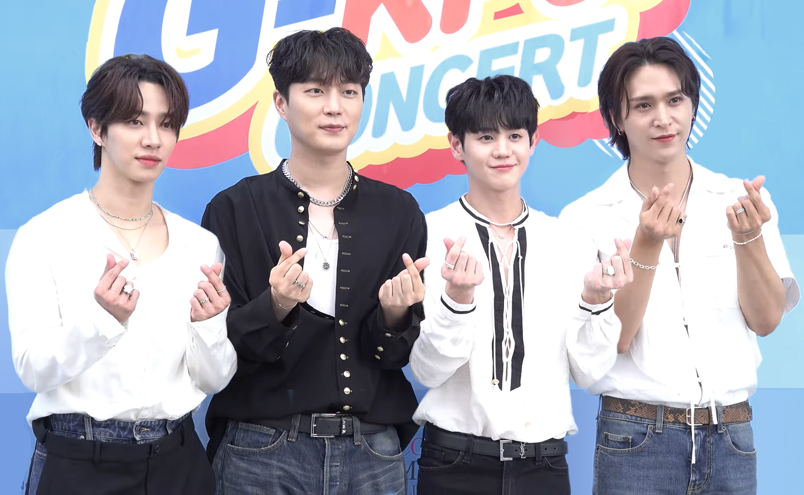

Ⅰ · 개념 정의'중소의 기적'이란 무엇인가1. 용어의 탄생
"중소의 기적"은 2009~2011년 비스트를 기점으로 형성. 2011년 비스트가 3대 기획사 바깥 남자 그룹으로서 MMA 대상(올해의 아티스트)을 수상하면서 결정화됐다. 비(非)빅3 남자 아이돌의 대상 수상은 극히 이례적인 사건이었다. 카라(2007~)는 DSP미디어가 구 대형사였으므로 '넘어진 대형사의 회생'에 가까우나, 한승연의 '소녀가장' 서사는 이후 모든 중소돌 서사의 감정적 원형이 된다.
Ⅱ · 실증 리서치27팀 전수 분류2. 시기별 특징: 미디어 환경이 기적의 종류를 결정한다
27팀을 **미디어 환경 기준 3개 시기〈중소의 기적 1기·2기·3기〉**로 나누고(본문·표에서는 짧게 1기·2기·3기로 표기), 각 시기 안에서 돌파 유형을 분류한다.
돌파 유형은 3가지:
- 음악중심형: 작곡가/프로듀서의 연속 히트로 점진 상승. 음악이 성장의 1차 동력
- 바이럴형: 비음악 콘텐츠(직캠·밈·바이럴)가 1차 트리거
- 틈새공략형: 메인스트림 공식을 거부하고 독자 경로
중소의 기적 1기: 방송·음원 시대 (2009~2013)

미디어 환경
- 지상파 3사 + 케이블(엠넷·MBC에브리원)
- 디지털 음원 스트리밍 본격화: 멜론(2004 론칭, 2009~ LOEN 운영 체제로 디지털 음원 시장 선두 사업자. 60%+ 점유율 도달은 이후)
- 인터넷 커뮤니티(DC인사이드·팬카페)가 팬덤 허브
- 유튜브는 보조 매체(SM 2006년, JYP 2008년 공식 채널 개설했으나 MV 아카이브 용도)
- 연간 데뷔 그룹 수: 2009년 15팀 → 2012년 40팀으로 급증, 중소사 난립 시작
대형기획사 영향력
- 지상파 완전 장악, 케이블은 경시
- 앨범 판매+콘서트 모델에 집중, 음원 시장은 아직 보조 수익원 취급
- K-pop 수출액 2012년 $2.35억(아직 내수 중심)
중소기획사 전략
- 케이블 리얼리티(예능 노출 → 캐릭터 인지도)
- 디지털 음원 차트(방송 없이도 수익 가능한 새 모델)
| 그룹 | 소속사 | 유형 | 돌파 무기 |
|---|---|---|---|
| 비스트 | 큐브 | 음악중심 | 신사동호랭이("Fiction") + 용준형 자작곡 동력, "Fiction" 7관왕→MMA 대상(2011) |
| 인피니트 | 울림 | 음악중심 | 스윗튠 프로듀싱, 칼군무, 케이블 리얼리티→콘서트 매진 |
| 씨스타 | 스타쉽 | 음악중심 | 시즌 히트 모델("썸머퀸"), 음원 차트 장악 |
| 걸스데이 | 드림티 | 음악중심 | "기대해"로 그룹 부활→연속 히트. "小(소)의 기적" |
| 에이핑크 | A큐브(현 IST) | 음악중심 | 청순 콘셉트 장수, 연속 히트 |
| VIXX | 젤리피쉬 | 음악중심 | 콘셉트돌 원형, 다크 세계관 차별화 |
| 틴탑 | 탑미디어 | 음악중심△ | 2012 음방 1위. 돌파 규모 제한적 |
| B1A4 | WM | 음악중심△ | "초통령". 돌파 규모 제한적 |
| 블락비 | 스타덤(현 KQ) | 틈새공략 | 힙합/개성파, 지코 개인 활동 시너지 |
| B.A.P | TS엔터 | 반례 | 빌보드 월드 앨범 1위→소속사 소송(2014)→해체(2019) |
| AOA | FNC | 반례 | 용감한형제 프로듀싱→멤버 간 괴롭힘 폭로(2020) 종결 |
음악중심형이 거의 유일한 경로다. 11팀 중 바이럴형 0, 틈새공략형 1(블락비). 이유는 명확하다. 바이럴 메커니즘이 없었다. 유튜브는 보조 매체, 직캠 문화는 미성숙, SNS는 태동기. 음방에 반복 출연하려면 좋은 곡이 계속 나와야 했고, 좋은 곡을 계속 내려면 작곡 동력이 필요했다.
작곡가가 곧 무기였다. 신사동호랭이(비스트), 스윗튠(인피니트), 용감한형제(씨스타·AOA). 이 시대의 기적은 특정 프로듀서의 이름과 묶인다. 프로듀서가 곧 중소사의 경쟁력이었고, 프로듀서가 떠나거나 역량이 떨어지면 팀도 같이 내려갔다.
발견은 어렵지만, 발견되면 비교적 안정적이었다. 음방 게이트키퍼를 뚫는 게 가장 어렵고, 뚫고 나면 음원 수익+콘서트로 안정적 비즈니스 모델 구축 가능. 이 시대 음악중심형의 장기 생존율이 가장 높다.
초기 팬 확보 경로가 방송에 집중돼 있었다. 음방 출연 → 팬카페 가입 → 앨범 구매가 핵심 루트. 케이블 예능(인피니트 "넌 내 운명", VIXX "마이돌"), DC인사이드 갤러리(비스트 "재활용돌" 서사), 한승연 같은 멤버 개인의 예능 활약이 보조적 경로로 작동했지만, 이것들도 결국 음방 노출이 전제이거나 음방 노출로 연결돼야 팬덤으로 전환됐다. 팬 확보·음악 노출·방송 출연이 높은 비율로 묶여 있었기 때문에(예능·라디오가 보조했지만 음방이 중심축), 음악중심형(좋은 곡→음방 반복 출연)이 지배적 경로였던 것이다.
중소의 기적 2기: 유튜브·SNS 시대 (2013~2018)

미디어 환경
- 유튜브가 '보조'에서 '주력 발견 채널'로 전환
- 트위터가 글로벌 팬 연결의 핵심: 팬카페(다음·네이버)의 한국어 전용 게이트키핑을 우회해 "누구나 팔로우만 하면 스탠"이 가능한 오픈 팬덤 시대 개막
- 페이스북이 일반 대중과 팬덤을 잇는 역주행 채널로 부상: "일반인들의소름돋는라이브" 같은 큐레이션 페이지가 비팬층에게 아이돌 영상을 노출
- 네이버 V앱(2015.08 베타, 09 정식) 등장, 직캠 문화 본격화(엠넷 M2 직캠 2014.05~)
- 지상파 음방 영향력 점진 하락(시청률 1% 미만)
- "역주행" 현상이 이 시대에 처음 등장: 발매 후 시차를 두고 재발견되는 메커니즘은 SNS+커뮤니티 바이럴이 전제
- 연간 데뷔 그룹 수: 2014년 60팀 → 2017년 86팀(역대 최다), 중소사 과잉 공급 심화
- 전 세계 한류 팬 수 2012년 926만 → 2017년 7,312만(8배), 서구권 급증
대형기획사 영향력
- 여전히 지상파+음방 중심 프로모션, SNS·페이스북은 보조 채널 취급
- SM·JYP 유튜브는 2006~2008년 개설했으나 MV 아카이브 용도, 트위터도 2010~2012년 개별 채택 수준(기획사 차원 전략화는 느림)
- BTS 이후에야 SNS 전략 본격 체계화: 2012~2013년 빅3 전부 SNS 마케팅 체계화(학술 연구 확인)
- 대형사 적응 속도: 3~5년
- K-pop 수출액 2016년 $4.43억 → 2018년 $5.64억
SNS 채널의 제도화: 초기 성공 사례(직캠 역주행, 트위터 팬 소통)가 나오자 산업이 빠르게 따라왔다. SNS 전문 콘텐츠 채널들이 등장하고(2015~), 홍보 에이전시들이 페이스북 페이지·커뮤니티를 전략 도구로 운영하기 시작했다. 음원사재기 논란(2012~)이 불거지고, 경쟁 아티스트를 겨냥한 역바이럴(조직적 부정 여론 조성) 관행이 퍼지면서 커뮤니티 자체가 바이럴 전장이 됐다. 처음에 유기적으로 열린 채널이 제도화되면서 닫히는 패턴: 중소사가 SNS에서 찾은 틈이 홍보 산업에 의해 포장·상품화되는 과정이다. 이 패턴은 3기에서 더 빠른 속도로 반복된다.
중소기획사 전략
- SNS 직접소통(PR팀 아닌 멤버 본인)
- 유튜브 자체 콘텐츠(브이로그·커버·리얼리티)
- 직캠·페이스북·커뮤니티가 만드는 바이럴+역주행 가능성
- P2P·커뮤니티 등 비공식 채널을 통한 초기 팬 확보
| 그룹 | 소속사 | 유형 | 돌파 무기 |
|---|---|---|---|
| BTS | 빅히트 | 동력+신규채널 | Pdogg 동력 + 트위터 직접소통 + 방탄로그. 음악과 채널 전략 동시 혁신 |
| 마마무 | RBW | 동력+신규채널 | 김도훈 프로듀싱 + 데뷔 전 협업 싱글(범키·케이윌) 선공개 + 보컬 실력 기반 차별화 |
| 오마이걸 | WM | 음악중심 | 1,009일 점진 상승, "살짝 설렜어" 멜론 1위. 주류 채널(음방+음원) |
| EXID | 예당엔터(현 바나나컬처) | 바이럴 | 하니 직캠(2014) → "위아래" 역주행. 🔑 EXID를 알리기 위해 P2P 사이트나 DC인사이드를 활용했다는 얘기가 있을 정도로 인터넷 밈을 적극 활용했고, 그 경로로 유입된 팬의 직캠이 페이스북·커뮤니티에서 폭발했다. 초기 팬 확보 → 팬 생산 콘텐츠 → 역주행의 3단계 |
| 크레용팝 | 크롬 | 바이럴 | 🔑 음방·무한도전 출연이 불가능해서 유튜브에서 무한도전 컨셉으로 자체 예능을 제작: 매니저가 촬영, 멤버들이 아이디어. 동시에 홍대·강남 등 젊은이 밀집 지역을 돌며 길거리 공연. 이 두 채널로 초기 팬 기반을 만든 뒤 "빠빠빠"가 터짐. 뮤비 제작비는 겨우 수십 만원으로 알려졌다. |
| 여자친구 | 쏘스뮤직 | 바이럴 | 넘어져도 춤추는 영상 바이럴 → 음방 장악으로 전환 |
| 모모랜드 | MLD | 바이럴 | "뿜뿜" 유튜브 조회수 + 동남아 바이럴 |
| 드림캐쳐 | 드림캐쳐컴퍼니 | 틈새공략 | 록/다크 판타지, 해외 투어 선행. 데뷔 8개월 만에 월드투어 |
바이럴형이 처음 등장한다. 8팀 중 바이럴형 4팀. 유튜브+SNS+페이스북이 "우연을 기회로 바꾸는 메커니즘"을 제공한 것이다. 그리고 이 시대에 "역주행"이라는 현상이 처음 등장한다. 발매 후 수개월~수년이 지나 재발견되는 메커니즘은 SNS·커뮤니티 바이럴이 있어야 가능했다. EXID의 "위아래"(2014)가 최초의 본격 역주행 사례.
초기 팬 확보 방법이 결정적으로 달라진다. 방송 시대에는 음방 노출→팬카페 가입이 압도적으로 지배적인 경로였다(예능·라디오 등 보조 경로는 있었지만 음방을 대체하진 못함). 이 시대에는 각 팀이 서로 다른 방식으로 '첫 100명'을 만들었다:
- EXID: 하니 직캠(2014) → "위아래" 역주행. EXID를 알리기 위해 P2P 사이트나 DC인사이드를 활용했다는 얘기가 있을 정도로 인터넷 밈을 적극 활용했고, 그 경로로 유입된 팬의 직캠이 페이스북·커뮤니티에서 폭발했다. 초기 팬 확보 → 팬 생산 콘텐츠 → 역주행의 3단계.
- 크레용팝: 유튜브 자체 예능(무한도전 컨셉) + 홍대·강남 길거리 공연으로 동네 젊은이를 직접 만남. 온라인(유튜브)과 오프라인(길거리)의 동시 운영이 초기 팬 기반.
- BTS: 트위터에서 멤버가 직접 팬과 1:1 소통. PR팀이 아닌 본인이 셀카, 감정 고백, 일상을 올림. 팬이 '소비자'가 아니라 '같이 성장하는 여정의 주체'라는 정체성을 형성. 관계의 질이 초기 팬의 충성도를 결정.
- 마마무: 데뷔 전 협업 싱글 선공개(범키 "Don't Be Happy", 케이윌 "Peppermint Chocolate", 빌보드 K-Pop Hot 100 7위) → 업계 관계자와 음악 마니아를 먼저 팬으로 확보. 퀸시 존스 2013년 한국 콘서트 무대에도 데뷔 전 섬. 전문가 입소문이 일반 팬 유입으로 전환.
동력+신규채널 조합이 가장 파괴적이다. BTS와 마마무. 둘 다 음악 동력(Pdogg, 에스나)을 갖고 있었고, 동시에 뉴미디어(트위터, 유튜브)를 대형사보다 먼저 주력으로 활용했다. 특히 BTS는 음악 동력과 채널 전략이 상호 강화하는 구조를 만들었다. 좋은 곡이 SNS에서 확산되고, SNS 관계가 다음 곡에 대한 기대를 쌓고, 그 기대가 앨범 판매로 이어졌다. 이건 방송 시대에는 불가능한 성장 루프였다.
바이럴 후 전환의 첫 사례가 나온다. EXID는 직캠 역주행 이후 신사동호랭이+LE 자작곡 동력으로 전환해 "아예" "L.I.E" 연속 히트. 여자친구는 바이럴 이후 음방 장악으로 전환. 두 팀 모두 바이럴이 열어준 문 안에서 동력을 만들었다. 반면 크레용팝과 모모랜드는 전환에 실패했다.
중소의 기적 3기: 숏폼·알고리즘 시대 (2018~2026)

미디어 환경
- 틱톡(2017 한국 도입, 2020년 지코 "아무노래" 챌린지로 K-pop 전략 도구 본격화, 10일 만에 1억 뷰)·유튜브 쇼츠(2021.07)·인스타 릴스(2020 글로벌, 2022.04 한국)가 발견(discovery)의 핵심 동력
- 팔로워 관계가 아니라 AI 추천 알고리즘이 노출을 결정: Gen Z의 51%가 틱톡을 주요 음악 발견 채널로 지목(라디오 6%), 2024년 빌보드 Global 200 진입곡의 84%가 틱톡에서 먼저 트랙션 확보
- K-pop 글로벌 확장: 수출액 2019년 $6.8억 → 2023년 $12.2억(사상 최초 $10억 돌파)
- 실물 앨범 판매 2018년 2천만장 → 2023년 1억 1,570만장(5.7배 폭증, 세븐틴 "FML" 639만장 역대 1위) → 2024년 9,330만장(9년 만의 첫 역성장)
- 대형사가 플랫폼 자체를 소유하기 시작: 위버스(HYBE, 2019.06, V라이브 2022.12 흡수), 디어유 버블(SM, 2020.02), 비욘드라이브(SM+JYP+네이버, 2020.04)
- 전 세계 한류 팬 수 2020년 1.22억 → 2023년 2.25억(2012년 대비 24배)
대형기획사 영향력
- 숏폼 챌린지까지 체계적 관리: 2021~2022년이면 모든 컴백 필수 프로모션으로 표준화
- 플랫폼 직접 소유로 팬 데이터·결제 내재화("플랫폼화된 팬덤"), SNS 전략 완전 내재화
- 대형사 적응 속도: 1~2년(2기보다 2배 이상 빨라짐)
- 빅4 합산 매출 2019년 ~1.3조 원 → 2023년 ~4조 원(3배)
- 2020년 빅히트 IPO(시총 8.7조 원)가 "기획사도 대형 투자 대상" 인식을 확산 → 카카오·네이버의 엔터 진입 가속
중소기획사 전략
- 멤버 개인 날것 유튜브(아직 대형사가 전략적으로 관리 안 함)
- 알고리즘 역주행(과거 콘텐츠의 시차 재발견)
- 서브컬처·니치 커뮤니티(게임·스트리밍·인디 씬)
- 해외 투어 직접 뚫기(빌보드 우회)
- 멜론 24Hits 차트 개편(2020)으로 조직적 스트리밍 영향력 약화 → 비팬덤 소규모 아티스트에 상대적 유리
- 다만 2024~2025년 침체기(앨범 판매 −19.6%, 빅4 주가 동반 하락, 중소돌 대량 해체)가 틈의 활용 자체를 어렵게 만드는 구조적 압력
| 그룹 | 소속사 | 유형 | 돌파 무기 |
|---|---|---|---|
| 에이티즈 | KQ | 동력+신규채널 | 에덴 프로듀싱 + 해외 투어→빌보드 200 1위 2회. 중소 최초 |
| 키스오브라이프(키오프) | S2 | 동력+신규채널 | 스트로베리바나나클럽 프로듀싱 + R&B 차별화. 52억 투자유치 |
| 스테이씨 | 하이업 | 음악중심 | 블랙아이드필승 프로듀싱, "ASAP" 히트. 주류 채널 |
| QWER | 타마고 프로덕션 | 틈새공략 | 걸밴드 + 서브컬처(유튜버 기획, 게임 커뮤니티). "고민중독" 멜론 4위 |
| 트리플에스 | 모드하우스 | 틈새공략 | 팬 투표 유닛 구성, 블록체인 참여형 모델 |
| 영파씨 | DSP/비츠 | 틈새공략 | 힙합 걸그룹 차별화 |
| 브레이브걸스 | 브레이브 | 바이럴 | 군 위문공연 유튜브 영상 → 알고리즘·댓글로 확산 → "롤린" 4년 만에 역주행(2017→2021). 방송 출연은 그 뒤 |
| 라붐 | 글로벌에이치 | 바이럴 | "상상더하기" 2021 역주행 붐 속 SNS·유튜브로 재발견, 5년 만에 역주행(2016→2021) |
| 리센느 | 더뮤즈(THE MUZE) | 바이럴 | 전문 콘텐츠 스튜디오 솔파스튜디오가 원이 유튜브를 캐릭터 콘텐츠로 기획·제작(미나미 '갸루'·제나 '신라공주' 등) → "러브 어택" 338일 만에 역주행 |
| 피프티피프티 | 어트랙트 | 반례 | TikTok "큐피드"→핫100 17위→4자 분쟁→공중분해 |
| 하이키 | GLG | 진행중 | "건물 사이에 피어난 장미". 유형 미확정 |
세 유형이 공존한다. 음악중심형 3팀, 바이럴형 3팀, 틈새공략형 3팀. 미디어 환경이 다양해지면서 돌파 경로도 다양해졌다. 방송 시대에는 음악중심형만 가능했고, SNS 시대에는 음악중심형+바이럴형이었으며, 숏폼 시대에 와서야 세 유형이 모두 성립한다.
알고리즘 역주행이 본격화된다. 역주행 자체는 2기에서 SNS·커뮤니티 바이럴로 시작됐지만(EXID 2014), 3기에서는 유튜브·숏폼 알고리즘이 발견을 주도한다: 브레이브걸스(군 위문공연 영상→유튜브 알고리즘, 4년), 라붐(SNS 역주행 연쇄, 5년), 리센느(숏폼, 1년). 방송 출연조차 알고리즘 화제의 결과로 따라온다. 2020년대의 예능 출연은 대개 SNS 역주행이 먼저고 방송이 그 뒤다. 곡의 유통기한이 사실상 사라졌다.
발견 장벽은 역대 가장 낮고, 지속 장벽은 역대 가장 높다. 팔로워 0에서도 알고리즘에 태울 수 있다. 그러나 알고리즘이 준 관심은 알고리즘이 가져간다. 주의력 경쟁이 역대 가장 치열. 이 시대의 바이럴형 3팀 중 아직 동력 전환에 성공한 팀이 없다(리센느 시도 중, 브레이브걸스 해산, 라붐 활동 제한).
기회의 수명이 가장 짧다. 대형사가 숏폼 전략까지 1~2년 만에 체계화했고, 플랫폼 자체를 소유하기 시작했다(위버스·디어유·비욘드라이브). 리센느의 "멤버 개인 날것 유튜브"라는 기회도 대형사가 벤치마킹하면 닫힌다. 기회가 열려 있는 시간이 점점 짧아지고 있다.
초기 팬 확보가 극도로 분산·개인화됐다. 1기에서는 음방 노출=음악 노출=팬 확보가 동시에 일어났다. 3기에서는 이 세 가지가 완전히 분리됐다:
- 리센느: 원이 개인 유튜브 채널("안녕하세요 원이입니다")은 멤버가 자생적으로 굴리는 채널이 아니라 전문 콘텐츠 스튜디오 솔파스튜디오가 기획·제작하는 캐릭터 콘텐츠 채널이다(솔파스튜디오의 오리지널 채널 중 하나). 담당 PD와 멤버가 함께 만든다: 멤버가 각자 캐릭터 아이디어를 PD·원이에게 제안하면 PD가 채택·제작하는 구조다. 미나미의 '갸루', 제나의 '신라공주(사투리 세계관)'처럼, 제작진은 멤버를 억지로 캐릭터화하지 않고, 각자가 원래 가진 매력이 가장 잘 드러나도록 기획·연출·편집한다(원이의 트레이닝복 차림도 의도된 연출). 즉 아이돌이 직접 운영하는 'MCN'이 아니라 전문 콘텐츠 스튜디오가 멤버 개인 채널을 캐릭터 IP 공장처럼 가동하는 모델이다. 시청자는 이 채널을 통해 그룹 전원과 관계를 맺고, 그 관계가 음원 소비로 전환돼 "러브 어택" 338일 역주행으로 이어졌다. 멤버 개인이 팀 유입 경로가 된 사례는 이전에도 있었지만(한승연의 예능→카라, 수지의 드라마→미쓰에이, 지코의 솔로→블락비), 리센느가 다른 건 ① 경로가 개인 숏폼 유튜브이고 ② 음악과 무관한 캐릭터 콘텐츠이며 ③ 1인이 아니라 멤버 전원의 캐릭터를 한 채널에서 동반 성장시키는 구조이고 ④ 그 동력이 아이돌 본인이 아니라 전문 콘텐츠 스튜디오의 기획·제작력이라는 점이다.
- QWER: 유튜버 출신 멤버의 기존 서브컬처 팬층이 밴드 팬으로 전환. 게임·스트리밍 커뮤니티가 초기 팬 확보처. 팬 확보 경로가 음악이 아니라 커뮤니티.
- 에이티즈: 데뷔 초기부터 해외 소규모 투어(미니 팬미팅)로 해외 팬을 먼저 조직 → 조직적 스트리밍/구매로 차트 성과 → 국내 관심 역수입. 팬 확보 경로가 음방이 아니라 현장.
- 키오프: 유튜브 커버/릴스 + R&B 차별화로 음악 마니아를 먼저 확보. 마마무(2기)와 유사한 "전문가 입소문 → 일반 팬 전환" 패턴.
3기의 공통점은 "팀의 음악"이 아닌 다른 경로로 첫 팬을 만든다는 것이다. 멤버 캐릭터, 서브컬처 기존 팬층, 해외 현장, 음악 마니아. 음악 노출 이전에 관계가 형성되고, 그 관계가 음악 소비로 전환된다. 음방 노출=팬 확보였던 1기와 정반대 구조.
해외 우회가 본격적 전략이 됐다. 에이티즈(빌보드 200 1위 2회), 키오프(빌보드 200 진입). 국내 벽이 대형사 장악+시장 축소로 높아진 반면, 글로벌 K-pop 팬덤은 커졌다. 해외에서 먼저 규모를 만들고 국내로 역수입하는 경로가 전략적 선택지가 됨.
Ⅲ · 구조 분석무엇이 기적을 만드는가3. 시대 간 비교: 미디어 환경이 바꾸는 것
유형 분포의 변화
| 음악중심형 | 바이럴형 | 틈새공략형 | 반례 | |
|---|---|---|---|---|
| 1기 (방송+음원) | 8팀 | 0팀 | 1팀 | 2팀 |
| 2기 (유튜브+SNS) | 3팀 | 4팀 | 1팀 | 0팀 |
| 3기 (숏폼+알고리즘) | 3팀 | 3팀 | 3팀 | 1팀 |
핵심: 미디어 환경이 바뀌면서 가능한 기적의 종류가 늘어난다. 방송 시대에는 음악중심형만 가능. 유튜브가 열리면서 바이럴형이 탄생. 숏폼/알고리즘 시대에 와서야 세 유형이 공존.
발견 장벽 vs 지속 장벽
| 발견 장벽 | 지속 장벽 | 결과 | |
|---|---|---|---|
| 1기 | 높음 (음방 게이트키퍼) | 낮음 (발견되면 안정) | 기적 수 적고 장기 생존율 높음 |
| 2기 | 중간 (SNS/유튜브 직접 접점) | 중간 (경쟁 심화) | 기적 수 늘고 성패 분화 |
| 3기 | 낮음 (알고리즘이 밀어줌) | 높음 (주의력 경쟁 극심) | 기적 수 많고 소멸도 빠름 |
역설: 미디어가 민주화될수록 발견은 쉬워지지만 생존은 어려워진다.
대형사 적응 속도와 기회의 수명
| 미디어 전환 | 대형사 적응 기간 | 적응 근거 | 중소사 기회의 수명 |
|---|---|---|---|
| 케이블TV → SNS (2013~) | 3~5년 | SM·JYP 유튜브 2006~08 개설→MV 아카이브 용도. 트위터 2010~12 개별 채택. 기획사 전략화 2012~13. BTS 후 전면 체계화 | BTS가 기회를 쓴 기간: ~4년 (2013~2017 빌보드 수상) |
| SNS → 숏폼 (2020~) | 1~2년 | 지코 "아무노래" 2020.01 전환점. 2021~22년이면 빅4 전부 숏폼 챌린지를 컴백 필수 프로모션으로 표준화 | 리센느가 쓴 기회: ~1년 |
| 숏폼 → ? | 6개월~1년 (추정) | 대형사 채용 공고·전략 발표가 "기회가 닫히고 있다"는 신호 | 점점 짧아지는 추세 |
시사점: 기회는 열리자마자 닫히기 시작한다. 다음 미디어 전환에서 중소사가 쓸 수 있는 시간은 더 짧을 것이다. 음악방송 시청률이 1% 미만으로 하락했지만, SBS·KBS·MBC의 K-pop 유튜브 채널(각 700~1,000만+ 구독)이 새로운 노출 경로가 됨: 음방 1위의 상업적 의미는 줄었으나 직캠·무대 영상의 유튜브 발견 효과는 기획사 규모와 무관하게 퍼포먼스 품질에 의존.
초기 팬 확보 방법론의 변화
| 주요 경로 | 팬 확보의 전제 | 음악과의 관계 | |
|---|---|---|---|
| 1기 | 음방 → 팬카페 (보조: 예능·라디오) | 방송 출연 | 음악 노출 ≈ 팬 확보 (거의 동시) |
| 2기 | SNS 직접소통, 유튜브, P2P, 길거리 | 채널 선점 | 음악 + 비음악 경로 병행 |
| 3기 | 개인 유튜브, 서브컬처, 해외 투어, 커버 | 인물·커뮤니티·현장 | 음악 이전에 관계 형성 → 음악으로 전환 |
핵심: 음악 노출과 팬 확보가 분리되는 속도가 시대마다 빨라진다. 1기에서 높은 중첩을 보였던 것이, 3기에서는 완전히 다른 행위가 됐다. "좋은 곡을 쓰면 팬이 생긴다"는 전제가 무력화된다. 좋은 곡은 여전히 필요하지만, 그 곡을 들을 사람을 먼저 만드는 별도의 전략이 필요해졌다.
4. 기적의 4분면: 미디어 전략 × 음악 동력
4분면이 말해주는 것
(1) A는 방송 시대의 산물이고, B는 뉴미디어 시대의 산물이다.
A사분면(정석의 기적) 8팀 중 6팀이 1기(방송+음원). B사분면(선점의 기적) 6팀 전부가 2~3기. 이건 우연이 아니다. 뉴미디어 환경이 "동력+신규채널" 조합을 가능케 했다. 방송 시대에는 좋은 곡이 있어도 음방이라는 단일 채널에만 의존했고, SNS/유튜브/숏폼이 열리면서 동력의 전달 경로가 다양해졌다.
(2) D는 뉴미디어 환경의 부산물이다. C가 비는 것과 대칭.
C(미완의 기적)가 거의 비어 있는 건, 음방 시대에 동력 없이 반복 출연→히트가 불가능했기 때문. 반면 D(시대의 기적)는 유튜브·숏폼이 만든 바이럴 메커니즘 위에서만 존재한다. 바이럴형이라는 현상 자체가 뉴미디어의 산물이다.
(3) B가 가장 파괴적이다.
BTS(트위터+Pdogg), 에이티즈(해외투어+에덴), 키오프(숏폼+스트로베리바나나클럽). 음악 동력과 채널 전략이 상호 강화하는 성장 루프를 만든 팀들. A(정석의 기적)는 안정적이고, D(시대의 기적)는 화려하지만, 산업을 재편한 건 B(선점의 기적)다. BTS 이후 모든 대형사가 SNS 전략을 체계화한 건 B의 위력에 대한 반응이었다.
(4) 시대가 가면서 B와 D의 비중이 커지고, A는 줄어든다.
이건 미디어 환경이 "마케팅의 비중"을 키우고 있다는 뜻이다. 방송 시대에는 곡만 좋으면 됐다(A). 뉴미디어 시대에는 곡도 좋아야 하고 채널 전략도 있어야 한다(B). 또는 채널 전략만으로 순간적 기적이 가능하다(D). 음악 산업에서 미디어 리터러시의 가치가 시대마다 올라가고 있다.
5. 교차 패턴
패턴 ①: 글로벌 우회(3기에서 본격화)
| 팀 | 경로 | 결과 |
|---|---|---|
| BTS | 트위터→빌보드 (2기) | 지속 |
| 에이티즈 | 해외투어→빌보드 200 (3기) | 지속 |
| 드림캐쳐 | 해외 페스티벌→월드투어 7회 (2~3기) | 국내 제한, 해외 지속 |
| B.A.P | 빌보드 월드 앨범 (1기) | 조직 파괴 |
| 피프티피프티 | TikTok→핫100 (3기) | 조직 파괴 |
국내 벽이 대형사 장악+시장 축소로 높아진 반면 글로벌 K-pop 시장은 커짐. 3기에서 해외 우회가 "어쩔 수 없는 선택"에서 "전략적 선택"으로 전환. 다만 해외 성공은 조직 안정성에 더 큰 압력을 준다(B.A.P·피프티피프티).
패턴 ②: 역주행의 진화(SNS 역주행 2기 → 알고리즘 역주행 3기)
역주행은 3기의 고유 현상이 아니다. 2기(2014~)에 처음 등장하고 3기에서 메커니즘이 바뀌었다.
2기: SNS·커뮤니티 기반 역주행(사람이 큐레이션)
| 팀 | 원곡 발매 | 역주행 시점 | 시차 | 역주행 트리거 |
|---|---|---|---|---|
| EXID | 2014.08 | 2014.10 | 2개월 | 팬 직캠 → 커뮤니티·페이스북 바이럴 |
| 여자친구 | 2015.01 | 2015.09 | 8개월 | 사고 영상 → 유튜브·커뮤니티 바이럴 |
역주행의 트리거가 사람의 행위(직캠 촬영, 영상 공유, 페이스북 큐레이션 페이지)였다. "일반인들의소름돋는라이브" 같은 페이스북 채널이 비팬 일반인에게 아이돌 영상을 노출시키면서, 팬덤 바깥→안으로의 유입이 대규모·비의도적으로 일어나기 시작했다(이전에도 예능·드라마를 통한 비팬 유입은 있었지만, SNS 바이럴은 규모와 속도가 달랐다).
3기: 알고리즘 기반 역주행(유튜브·숏폼이 발견을 주도, 방송은 결과)
| 팀 | 원곡 발매 | 역주행 시점 | 시차 | 역주행 트리거 |
|---|---|---|---|---|
| 브레이브걸스 | 2017 | 2021 | 4년 | 군 위문공연 유튜브 영상 → 알고리즘·댓글 확산 (방송 출연은 이후) |
| 라붐 | 2016 | 2021 | 5년 | SNS·유튜브 역주행 연쇄(2021 붐) |
| 리센느 | 2024 | 2025 | 1년 | 멤버 유튜브 → 숏폼 알고리즘 → 음원 재발견 |
유튜브·숏폼 알고리즘이 과거 콘텐츠를 직접 끌어올리고(댓글·커뮤니티가 증폭), 방송 출연은 그 결과로 따라온다. 시차가 수년 단위로 늘어남. 곡의 유통기한이 사실상 사라졌다.
진화의 핵심: 2기 역주행이 팬·커뮤니티의 손을 거쳤다면, 3기에서는 유튜브·숏폼 알고리즘이 발견을 주도하고 방송·예능은 그 뒤에 따라온다. 발견의 민주화가 한 단계 더 진행된 것. 다만 역주행 이후 동력 전환 난이도도 함께 올라갔다. 관심의 속도가 빨라진 만큼 이탈도 빠르다.
패턴 ③: 바이럴→음악중심 전환 (전 시대 공통)
| 팀 | 시대 | 전환 성공 | 전환 무기 |
|---|---|---|---|
| EXID | 2 | O | 신사동호랭이 + LE 자작곡 |
| 여자친구 | 2 | O | 음방 장악 + 팬덤 기반 |
| 크레용팝 | 2 | X | 프로듀서 1회성 |
| 모모랜드 | 2 | X | 해외 바이럴 재현 불가 |
| 브레이브걸스 | 3 | X | 짧은 전성기 후 해산 |
| 라붐 | 3 | X | 활동 제한 |
| 리센느 | 3 | ? | 진행 중 |
전환율: 2기에서 2/4(50%), 3기에서 0/3(0%, 리센느 진행 중). 시대가 가면서 전환이 더 어려워지는 추세. 이유: 관심 사이클이 짧아져 동력 구축에 쓸 수 있는 시간이 줄었다.
패턴 ④: 초기 팬 확보 ≠ 팬 유지(두 방법론의 분리)
발견(미디어 환경이 제공)과 지속(음악 동력이 결정) 사이에 **"첫 100명을 만드는 기술"**이라는 독립 변수가 있다. 이 기술은 시대마다 완전히 다르다.
| 시대 | 초기 팬 확보의 핵심 기술 | 팬 유지의 핵심 기술 | 두 기술의 관계 |
|---|---|---|---|
| 1 | 음방 출연 + 예능 (보조) | 좋은 곡을 계속 내는 것 (=동력) | 높은 중첩: 확보와 유지가 거의 같은 행위 (예능 보조 경로 존재하나 음방이 전제) |
| 2 | SNS 직접소통, 유튜브, P2P, 길거리 | 동력 + 팬 관계의 질(BTS 모델) | 분리 시작: 확보는 채널, 유지는 음악+관계 |
| 3 | 캐릭터, 서브컬처, 해외 현장, 커버 | 동력 + 알고리즘 적응 + 글로벌 스케일 | 완전 분리: 확보는 비음악, 유지는 음악+구조 |
이 분리가 의미하는 것: "좋은 곡을 쓰면 팬이 온다"는 1기의 전제가 3기에서는 성립하지 않는다. 좋은 곡은 유지의 조건이지 확보의 조건이 아니다. 초기 팬을 만드는 건 별도의 기술이고, 그 기술은 음악 역량과 전혀 다른 역량(캐릭터 구축, 커뮤니티 침투, 현장 운영)을 요구한다.
전환의 문제: 비음악 경로로 확보한 팬을 음악 팬으로 전환하는 것은 새로운 과제다. 리센느는 캐릭터 팬→음악 팬 전환을 시도 중이고, QWER는 서브컬처 팬→밴드 팬 전환에 부분 성공했다("고민중독" 멜론 4위). 이 비음악 팬→음악 팬 전환율이 3기에서 "바이럴→음악중심 전환"만큼이나 중요한 변수가 될 것이다.
6. 반례 분석
B.A.P: 동력+해외 우회, 그러나 조직 파괴
TS엔터 소속, 2012 데뷔. 파워풀 퍼포먼스로 빌보드 월드 앨범 차트 1위(2014, "First Sensibility"). B사분면(선점의 기적) 위치. 그러나 2014년 11월 전속계약·수익 분배 소송(3년간 90억 수입 중 멤버 1인당 ~2천만원 지급 주장), 장기 활동 중단 후 2019년 해체.
피프티피프티: 3기의 극단적 D→탈락
"큐피드"로 빌보드 핫100 17위(데뷔 4개월). D사분면(시대의 기적)에서 시작해 전환 시도 전에 4자 분쟁으로 와해. 브랜드 평판 347만점→15만점.
크레용팝: D사분면의 전형
뮤비 38만원(스토리 버전 기준, 안무 버전도 대표가 중고 카메라 1대로 직접 촬영), 유튜브 누적 6,600만+ 조회, 빌보드 K-Pop Hot 100 1위. 그러나 후속곡 임팩트 실패. 프로듀서 동력 1회성 + B급 콘셉트 반복 한계. D(시대의 기적)에서 A(정석의 기적)·B(선점의 기적)로의 전환 실패.
공통 교훈: 사분면(A 정석·B 선점·C 미완·D 시대의 기적) 위치와 무관하게, ① 조직 안정성(B.A.P·피프티피프티)과 ② 동력 지속성(크레용팝)이 없으면 기적은 끝난다. 이 두 가지는 미디어 환경과 무관한 시대불문 필요조건.
7. 공통 조건 vs 특수 조건: 시대마다 변하지 않는 것과 변하는 것
시대불문: 미디어가 뭐든 변하지 않는 것
| 조건 | 설명 | 사분면에서의 역할 |
|---|---|---|
| 음악 동력 | 연속 히트 가능한 작곡 구조 | A·B 진입의 전제. 없으면 C·D |
| 조직 안정성 | 아티스트-소속사 신뢰 | 어떤 사분면이든 이것 없으면 탈락 |
| 서사의 힘 | 다윗 vs 골리앗 언더독 구도 | 팬덤 감정 투자의 연료 |
| 최소 자본 | 데뷔 후 1~2년 생존 체력 | 모든 유형의 전제 |
시대 특수: 미디어가 바뀌면 같이 바뀌는 것
| 조건 | 1기 | 2기 | 3기 |
|---|---|---|---|
| 발견 채널 | 케이블 예능+음방 | 유튜브+트위터+직캠 | 숏폼+AI 추천+해외투어 |
| 바이럴 가능 여부 | 불가능 | 가능 (유튜브) | 가능+역주행(알고리즘) |
| 대형사와의 간극 | 케이블 경시 (3~5년) | SNS 보조 취급 (3~5년) | 숏폼 빠른 적응 (1~2년) |
| 초기 팬 확보 | 음방→팬카페 + 예능 보조 | SNS·유튜브·P2P·길거리 (복수) | 캐릭터·서브컬처·해외·커버 (분산) |
| 팬 확보 ↔ 음악의 관계 | 높은 중첩 | 분리 시작 | 완전 분리 |
| 기적의 주요 유형 | 음악중심형만 | 음악중심+바이럴 | 음악중심+바이럴+틈새공략 |
| 지속의 난이도 | 낮음 | 중간 | 높음 |
Ⅳ · 전략과 결론그래서 어떻게 해야 할까?8. 벤치마킹 전략: "다음 기회"를 어떻게 쓸 것인가
전제: 미디어 환경 읽기가 1단계, 초기 팬 설계가 2단계다
기적의 유형이 뭐든, 당대의 미디어 환경에서 대형사가 아직 장악하지 않은 채널을 식별하는 것이 첫 번째 과제이고, 그 채널에서 첫 팬을 어떻게 만들지 설계하는 것이 두 번째 과제다. 3기에서는 이 두 과제가 완전히 다른 역량을 요구한다. 2026년 현재:
- 닫히고 있는 기회: 숏폼 챌린지(대형사 기본 전략화), 팬 커뮤니티 앱(위버스·디어유 등 대형사 직접 소유)
- 아직 열려 있는 기회: 전문 스튜디오 제작형 멤버 유튜브(리센느가 선점, 전문 콘텐츠 스튜디오 솔파스튜디오가 멤버 개인 채널을 캐릭터 콘텐츠로 기획·제작해 전원을 동반 성장시키는 구조), 로컬 정체성의 글로벌 밈화(거제 사투리→글로벌), 서브컬처 커뮤니티(QWER 모델), 오프라인↔디지털 하이브리드
- 다음 전환 후보: AI 생성/큐레이션 콘텐츠, 몰입형 경험(VR/AR), 라이브 커머스 연동
단, 기회의 수명이 점점 짧아지고 있다. 2기에서 BTS가 기회를 쓴 기간은 ~4년. 3기에서 리센느가 쓴 기회는 ~1년. 다음 전환에서 쓸 수 있는 시간은 더 짧을 것. 미디어 전략의 민첩성(speed)이 과거보다 중요해졌다.
사분면별 전략
B를 노린다면: 가장 파괴적, 가장 어려움
- 음악 동력(작곡진) + 신규 채널 선점을 동시에
- BTS 모델: 동력과 채널이 상호 강화하는 루프 설계
- 리스크: 두 가지를 동시에 해야 하므로 역량·자본 요구 높음
- 이 전략이 성공하면 산업을 재편한다
A를 노린다면: 가장 안정적, 시간이 걸림
- 작곡 동력에 집중, 채널은 당대 주류를 따라감
- 오마이걸 모델: 1,009일 점진 상승
- 리스크: 3기에서 A의 난이도가 올라감 (대형사의 주류 채널 장악이 더 강해졌으므로)
D→B 전환을 노린다면: 바이럴 후 빠른 동력 구축
- 밈 가능한 콘텐츠 자산을 의도적으로 심되, 바이럴에 의존하지 않음
- 바이럴 후 1~2년이 결정적. 3기에서는 이 기간이 더 짧을 수 있음
- EXID 모델: 직캠 역주행 직후 신사동호랭이+LE 자작곡 동력 가동
틈새를 노린다면: 가장 현실적, 스케일 제한
- 메인스트림 차트가 아닌 니치 시장에서 지속 가능 모델
- 드림캐쳐 모델: 해외 투어 기반 수익, 국내 차트에 의존하지 않음
- QWER 모델: 서브컬처 커뮤니티 기반 진입 → 메인스트림 크로스오버
초기 팬 전략: 4축의 새 변수
사분면과 별도로, **"첫 100명을 어디서 어떻게 만들 것인가"**를 설계해야 한다. 2026년 기준으로 작동하는 초기 팬 확보 경로:
- 전문 스튜디오 제작형 멤버 유튜브: 리센느가 선점. 멤버 개인 채널을 전문 콘텐츠 스튜디오(솔파스튜디오)가 캐릭터 콘텐츠로 제작·편성해 그룹 전원을 동반 성장시키는 구조. 핵심은 아이돌의 자생적 운영이 아니라 전문 스튜디오의 기획·제작력. 그룹 아이덴티티 이전에 인물 매력으로 팬 유입 → 음악 전환. 대형사가 벤치마킹하기 전까지 유효
- 서브컬처 커뮤니티 침투: QWER 모델. 기존 커뮤니티(게임·스트리밍·인디 씬)의 팬을 밴드 팬으로 전환. 커뮤니티가 깊을수록 전환율 높음
- 해외 소규모 투어/팬미팅: 에이티즈 모델. 국내 인지도가 낮을 때 해외에서 먼저 직접 만남. 조직적 팬덤의 씨앗
- 전문가·마니아 입소문: 키오프·마마무 모델. 업계 관계자나 음악 마니아를 먼저 팬으로 확보 → 신뢰 기반 확산
주의: 초기 팬 확보와 팬 유지는 다른 기술이다. 비음악 경로로 모은 팬을 음악 팬으로 전환하는 2단계 설계가 필수. 전환에 실패하면 캐릭터 팬·밈 팬으로 머물다 이탈한다.
공통: 시대와 유형 무관
- 조직 안정성: 아티스트-소속사 신뢰. B.A.P·피프티피프티가 증명한 반례
- 음악 동력: 1곡이 아니라 3년치 레퍼토리 설계. 크레용팝이 증명한 반례
- 최소 자본: 키오프 52억 투자유치, 리센느 버클리 출신 경영진. 열정만으로 안 됨
- 서사 아카이빙: 실제 과정의 기록. 날조가 아닌 아카이빙 (리센느 흙바닥 영상, BTS FESTA)
9. 핵심 테제
미디어 환경이 기적의 종류를 결정하고,
초기 팬 확보가 기적의 시작을 결정하고,
음악 동력이 기적의 지속을 결정한다.
발견의 조건은 시대에 달렸다. 방송 시대에는 음악중심형만, SNS 시대에는 바이럴형 추가, 숏폼 시대에는 세 유형 공존. 어떤 기적이 가능한지를 미디어 환경이 규정한다.
"첫 100명"을 만드는 기술이 시대마다 완전히 바뀐다. 1기에서는 음방 노출이 곧 팬 확보와 거의 동일한 행위였다(예능 보조 경로는 있었지만 음방 전제). 3기에서는 음악 이전에 캐릭터·커뮤니티·현장으로 관계를 먼저 만들어야 한다. 초기 팬 확보는 발견(미디어)과 지속(동력) 사이에 있는 독립 변수이고, 이 변수의 난이도가 올라가고 있다. "좋은 곡을 쓰면 팬이 온다"는 전제는 3기에서 성립하지 않는다.
지속의 조건은 시대와 무관하다. 음악 동력·조직 안정성·자본. 이건 방송 시대에도, 숏폼 시대에도 똑같이 필요하다. 미디어가 바뀌어도 이 세 가지는 변하지 않는다.
미디어 리터러시의 가치는 시대마다 올라간다. 방송 시대에는 곡만 좋으면 됐다. 지금은 곡도 좋아야 하고, 어떤 채널에서 어떻게 발견되게 할지도 설계해야 하고, 그 곡을 들을 사람을 먼저 만드는 전략도 필요하다. B사분면(선점의 기적)이 가장 파괴적인 건, 세 역량을 동시에 갖추기 때문이다.
기회는 열리자마자 닫히기 시작한다. 대형사의 적응 속도가 빨라지고 있다. 다음 미디어 전환에서 중소사가 쓸 수 있는 시간은 더 짧을 것. 기적의 난이도는 시대마다 올라간다.
초기 팬 확보와 팬 유지는 다른 기술이다. 비음악 경로로 모은 팬을 음악 팬으로 전환하는 것은 3기의 새로운 과제다. EXID의 "바이럴→음악중심 전환"이 2기의 핵심 과제였다면, "비음악 팬→음악 팬 전환"이 3기의 핵심 과제다. 이 전환에 성공하는 팀만이 기적을 지속할 수 있다.
기적이 반복된다면 패턴이다. 그리고 이 패턴의 세 축은 "시대의 기회를 읽는 눈"(미디어 전략), "첫 팬을 만드는 기술"(초기 팬 확보), "기회를 채울 실력"(음악 동력)이다. 셋 다 통제 가능한 영역에 있다. 운이 필요한 건 바이럴 타이밍뿐이고, 바이럴 없이도 기적은 일어난다. A사분면(정석의 기적)이 그 증거다.
10. 시대불변 규칙: 미디어가 뭘로 바뀌든 적용되는 것
핵심 테제가 "1~3기에서 뭘 배웠나"라면, 이 섹션은 **"4기가 와도 작동하는 규칙"**이다. 1~3기를 관통해 검증된 것만 남겼다.
규칙 1: 기회의 반감기
매 미디어 전환마다 중소사가 쓸 수 있는 기회의 유효 기간이 절반으로 줄어든다.
| 전환 | 대형사 적응 | 선점 윈도우 |
|---|---|---|
| 방송→SNS | 3~5년 | BTS ~4년 |
| SNS→숏폼 | 1~2년 | 리센느 ~1년 |
| 숏폼→? | 6개월~1년 (추정) | ? |
적용법: 새 미디어가 등장하면, "대형사가 이걸 진지하게 취급하기까지 얼마나 걸리나"를 추정하라. 그 기간의 전반부에 포지션을 잡아야 한다. 후반부에 진입하면 이미 늦다. 대형사의 채용 공고·전략 발표가 역설적으로 "이 기회가 닫히고 있다"는 신호다.
규칙 2: 동력 선행 원칙
음악 동력이 바이럴보다 선행할수록 생존 확률이 올라간다. 바이럴 후 동력 구축에 쓸 수 있는 시간은 시대마다 짧아진다.
| 순서 | 사례 | 결과 |
|---|---|---|
| 동력 선행 | 비스트, 인피니트, BTS, 마마무, 에이티즈 | 전원 장기 생존 |
| 바이럴 선행 → 동력 성공 | EXID, 여자친구 | 생존 (전환기 리스크) |
| 바이럴 선행 → 동력 실패 | 크레용팝, 모모랜드, 브레이브걸스 | 소멸 |
전환 성공률: 2기에서 50%(2/4), 3기에서 0%(0/3, 리센느 진행 중).
적용법: 데뷔 전에 음악 동력(인하우스 프로듀서 또는 장기 계약 외부 프로듀서)을 확보하는 게 이상적이다. 바이럴이 먼저 터졌다면, 12개월 이내에 동력을 가동해야 한다. 3기 기준이고 4기에서는 이 기간이 더 짧아질 것이다. 바이럴 마케팅에 투자하기 전에 3년치 음악 레퍼토리를 먼저 설계하라.
규칙 3: 대형사 무관심 지점 = 다음 기회
중소사의 다음 기회는 "대형사가 지금 무시하고 있는 채널"에 있다. 대형사가 체계적으로 관리하기 시작하면 기회는 닫힌다.
| 시대 | 대형사가 무시한 것 | 중소사가 선점한 것 |
|---|---|---|
| 1 | 케이블 예능 | 인피니트·VIXX 리얼리티 |
| 2 | 트위터·유튜브 직접소통 | BTS·마마무·크레용팝 |
| 3 | 멤버 개인 날것 유튜브 | 리센느 |
적용법: "대형사가 지금 뭘 안 하고 있나"를 정기적으로 스캔하라. 대형사가 하지 않는 이유가 "아직 모른다"인지 "전략적으로 버렸다"인지를 구분하라. 전자가 기회다. 대형사가 해당 채널 전담팀을 만들거나 인력을 뽑기 시작하면 카운트다운이 시작된 것이다.
규칙 4: 초기 팬 확보와 음악의 거리가 멀수록 전환 설계가 필수
초기 팬 확보 경로가 음악에서 멀어질수록, 음악 팬으로의 전환을 위한 명시적 퍼널이 필요하다. 전환 없이는 캐릭터 팬·밈 팬으로 머물다 이탈한다.
| 시대 | 팬 확보↔음악 거리 | 전환 설계 필요도 |
|---|---|---|
| 1 | 거리 최소 (음방≈팬 확보, 예능 보조) | 낮음 |
| 2 | 가까움 (SNS지만 음악 콘텐츠) | 낮음~중간 |
| 3 | 멂 (캐릭터·서브컬처·현장) | 높음 |
적용법: 초기 팬 확보 채널을 정했으면, 그 채널에서 음악 소비까지의 전환 경로를 3단계 이내로 설계하라. 리센느: 원이 유튜브 → 그룹 유튜브 → 음원. QWER: 게임 커뮤니티 → 라이브 영상 → 음원. 3단계를 넘으면 이탈률이 급증한다. 4기에서는 초기 팬 확보가 음악에서 더 멀어질 것이므로 이 설계의 중요도가 올라간다.
규칙 5: 조직 안정성은 모든 전략의 전제조건
아티스트-소속사 관계가 깨지면 어떤 사분면이든, 어떤 미디어 환경이든 기적은 끝난다. 이건 1기에서도, 3기에서도 똑같았다.
| 사례 | 사분면 | 시대 | 파괴 원인 |
|---|---|---|---|
| B.A.P | B (동력+해외) | 1 | 전속계약 소송 |
| 피프티피프티 | D (바이럴) | 3 | 4자 분쟁 |
| AOA | A (동력+주류) | 1 | 내부 스캔들 |
적용법: 미디어 전략·음악 동력·초기 팬 전략보다 계약 구조·수익 분배·의사결정 참여 3가지를 먼저 설계하라. 이 셋이 조직 안정성의 선행 지표다. 해외 성공이 클수록 조직에 가해지는 압력도 커지므로(B.A.P·피프티피프티), 글로벌 전략을 택할수록 조직 설계에 더 투자해야 한다.
규칙 6: 바이럴은 가속기, 동력은 필수조건
바이럴 없이 기적은 일어난다(A사분면 8팀). 동력 없이 기적이 지속된 사례는 0이다.
A사분면(바이럴 없이 동력만으로): 비스트, 인피니트, 씨스타, 에이핑크, VIXX, 걸스데이, 오마이걸, 스테이씨. D사분면(동력 없이 바이럴만으로): 장기 생존 0팀.
적용법: 바이럴은 있으면 좋고 없어도 되는 것이다. 동력은 없으면 안 되는 것이다. 자원이 제한됐을 때 바이럴 마케팅과 음악 동력 중 하나만 택할 수 있다면, 동력이다. 바이럴이 와도 동력이 없으면 소비되고 끝이고, 동력이 있으면 바이럴 없이도 A사분면에서 생존한다.
6개 규칙의 우선순위: 5(조직) → 6(동력) → 1(기회 식별) → 3(채널 선점) → 4(팬 전환) → 2(속도). 5와 6이 없으면 나머지가 무의미하고, 1~4는 미디어가 바뀔 때마다 실행 방법이 달라지지만 규칙 자체는 동일하다.
참고 · Appendix데이터 · 출처 · 더 읽을거리11. 시장 구조 데이터: 기적의 배경
K-pop 수출액 추이 (KOCCA)
| 연도 | 수출액 (USD) | 비고 |
|---|---|---|
| 2012 | $2.35억 | 내수 중심 |
| 2015 | $3.81억 | |
| 2018 | $5.64억 | BTS 빌보드 효과 |
| 2020 | $7.56억 | 코로나에도 성장 |
| 2023 | $12.23억 | 사상 최초 $10억 돌파 |
실물 앨범 판매 추이 (써클차트/가온차트, Top 400 기준)
| 연도 | 판매량 | 비고 |
|---|---|---|
| ~2017 | ~1,600~1,800만 | BTS "Love Yourself: Her" = 2001년 이후 첫 밀리언셀러 |
| 2018 | 2,000만+ | |
| 2020 | 4,000만+ | BTS "MOTS:7" = 역대 첫 400만+ |
| 2021 | 5,700만 | |
| 2023 | 1억 1,570만 | 세븐틴 "FML" 639만장 역대 1위 |
| 2024 | 9,330만 | 9년 만의 첫 역성장 (−19.6%) |
연간 데뷔 그룹 수
| 연도 | 팀 수 | 비고 |
|---|---|---|
| 2009~10 | 각 15 | 1기 초기 |
| 2012 | 40 | 중소사 난립 시작 |
| 2014 | 60 | 2기 |
| 2017 | 86 | 역대 최다. 과잉 공급 피크 |
| 2020 | 61 | 코로나 감소 |
| 2022 | 63 |
전 세계 한류 팬 수 (한국국제교류재단)
| 연도 | 팬 수 | 조사 대상국 |
|---|---|---|
| 2012 | 926만 | 85개국 |
| 2017 | 7,312만 | 92개국 |
| 2020 | 1억 2,151만 | — |
| 2023 | 2억 2,500만 | — |
2012→2023: 24배 성장. 아메리카 지역 팬 2022→2023 102% 증가(1,459만→2,888만).
투자 환경과 중소사
전환점: 빅히트 IPO (2020.10)
- SV Investment가 2011~12년에 빅히트에 40억 원 투자 → 2015~18년 1,088억 원 회수(27배 수익). BTS 데뷔 전, 연습생만 있던 시점의 투자.
- 빅히트 KOSPI 상장 첫날 시총 8.7조 원. "기획사도 대형 투자 대상"이라는 인식 확산.
- 이후 카카오(SM 지분 39.87% 인수), 네이버(YG·SM 투자), 컴투스(RBW 투자) 등 플랫폼·게임사의 엔터 시장 진입 가속.
2024~2025년: 중소사 투자 새 물결
- 더블랙레이블: 시리즈B 1,200억 원 (기업가치 1조 원, Krafton+Tencent Music 리드)
- DSC Investment(한국 최대 VC): QWER 소속사 3Y Corporation, 가상 아이돌 Playve 개발사 Vlast 등에 투자
- K-pop 프로젝트 파이낸싱 사례 등장 (IRR 30% 수준 회수)
- 키오프 소속사 S2엔터: 52억 원 시리즈A (한국투자파트너스·유니온투자파트너스·퓨처플레이)
2024~2025년 침체가 중소사에 미친 영향
- 중소돌 대량 해체·활동 종료: 위클리, 에버글로우, 퍼플키스, 네이처, 체리블렛, 시그니처, 로켓펀치 등 (2024~2025)
- "빅4 기획사와 무관한 신인 팀의 시장 안착은 해를 거듭할수록 어려워지고 있다": 양극화 심화가 이 리포트의 현재적 맥락
구조적 변수: 멜론 차트 개혁·코로나·프로듀스101
멜론 차트 개혁 (2017, 2020)
- 2017: 문체부 음원 발매 시간 제한(정오~18시)으로 차트 조작 억제
- 2020.07: 실시간 차트 폐지 → "24Hits" 체계(1인 1곡 1일 1회 반영, 19시 갱신). 소규모·비팬덤 아티스트에게 유리한 구조 변화: 조직적 스트리밍의 차트 영향력 약화
코로나 (2020~2021)
- 오프라인 행사 온라인 전환 → 영상통화 팬사인회 표준화. 소규모 기획사의 상대적 평등화: 대규모 콘서트장 확보 능력과 무관하게 팬 관계 구축 가능
프로듀스 101 (2016~2019)
- 소규모 기획사 연습생이 전국 노출 가능한 경로를 제공. 그러나 IP·수익이 Mnet/CJ에 집중되는 구조. 2019년 투표 조작 스캔들(안준영 PD 유죄)로 경로 붕괴
Sources
- 경향신문 — 대형 걸그룹이 점령한 가요계서 피어난 '중소의 기적'들 (2023.04)
- 서울경제 — 피프티 피프티·하이키, '중소의 기적'에는 다 이유가 있다
- 일요신문 — '중소돌의 기적' 옛말?
- 천지일보 — 에이티즈, 계속되는 K팝 흙수저 중소돌의 기적
- 이데일리 — 흙바닥 운동장서 행사 뛰던 리센느, 중소돌 기적 새 주자로 (2026.06)
- 한국경제 — 키스오브라이프 성공 뒤에는
- 아시아경제 — 드림캐쳐, 틈새시장 공략
- 스포츠서울 — 에이티즈-키오라-하이키-영파씨, 중소돌 매운맛
- DBpia — 에이티즈 중소연예기획사 성공 요인 분석 논문
- 데일리안 — '중소돌의 기적' 피프티에겐 없고, BTS에겐 있는 것
- 유니콘팩토리 — 키오프 소속사, 52억 투자유치
- 위키트리 — 338일 만에 차트 뚫고 공약까지, 중소돌 리센느의 반란
- 이투데이 — 리센느 원이 유튜브, 심상찮은 떡상
- 아트인사이트 — 거제 야호 뒤에는 이들이 있었다 (Opinion · 리센느 원이 채널 제작진 솔파스튜디오, 2026.05)
- 솔파스튜디오(team solfa) 작업물 — '안녕하세요 원이입니다' 오리지널 채널 제작
- HBS Working Knowledge — Building an 'ARMY' of Fans: Marketing Lessons from BTS
- K팝 침체기, '중소돌'에 직격타 — 네이트뉴스
- Statista — South Korea music industry export value 2005-2024
- Music Ally — South Korean album sales surged to 115.1M units in 2023
- Music Business Worldwide — K-pop in crisis? ~93M albums sold in 2024
- Morgan Stanley — K-pop Investment Potential
- KED Global — VCs step up K-pop startup bets (2025.09)
- 아시아경제 — SV Investment, 빅히트에 BTS 데뷔 전 40억 투자
- Korea.net — 전 세계 한류 팬 2023년 2.25억 돌파
- SocialFansGeek — K-pop Fans Demographics and Statistics 2024
- Deloitte — User-generated video content fuels music discovery (2024)
- Koreaboo — K-pop groups debuted per year since 1990s
- Korea Herald — Annual physical sales, YouTube vs Melon
- NPR — Inside Sajaegi: K-pop's open secret
- NME — Zico apologises for popularising TikTok challenges in K-pop
- CNBC — K-pop agencies Q3 2024 results
- HYBE 2025 Annual — MBW